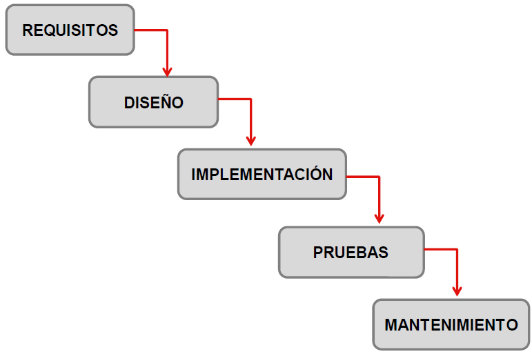
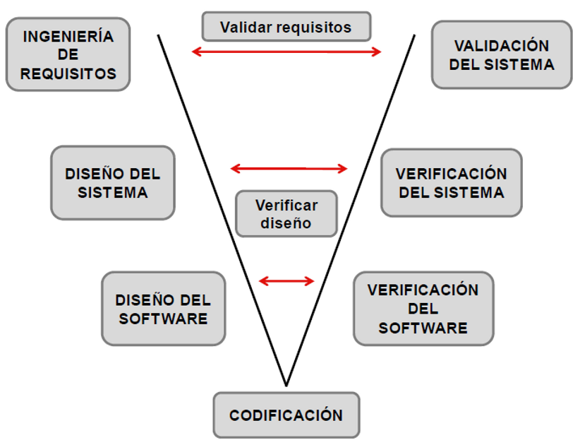
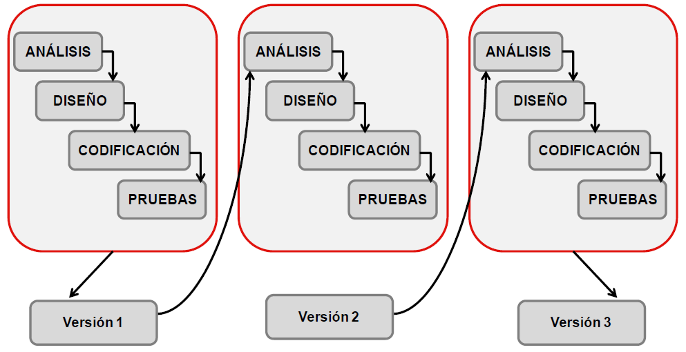
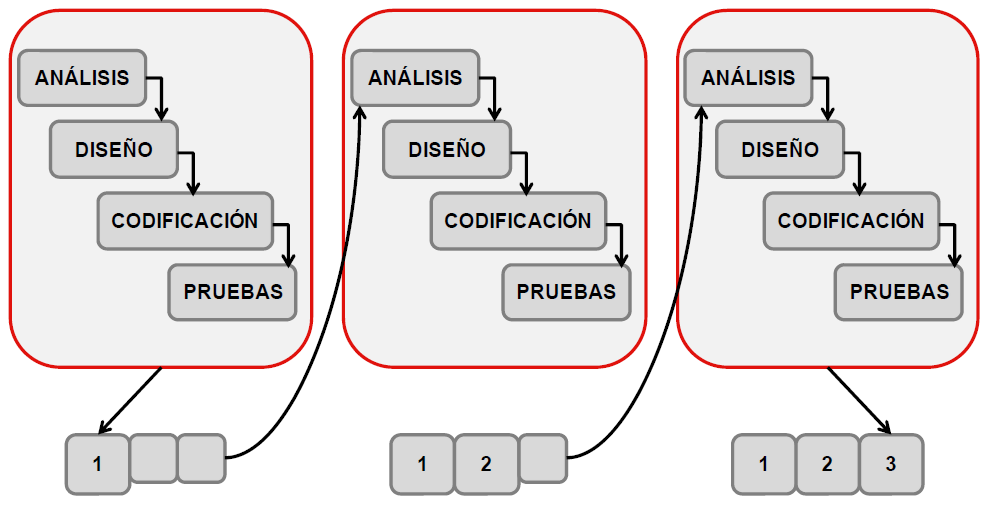
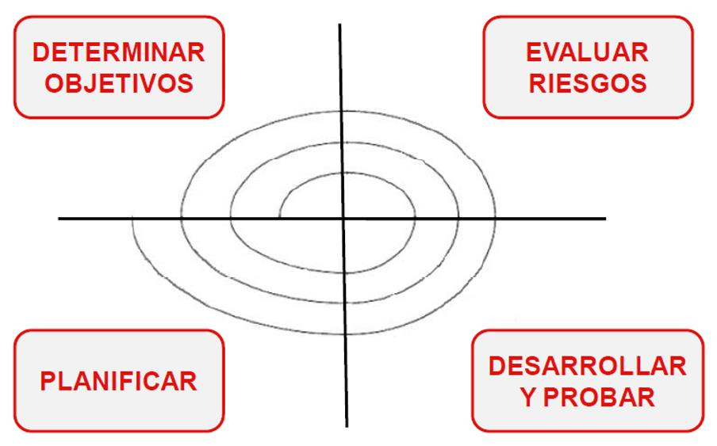
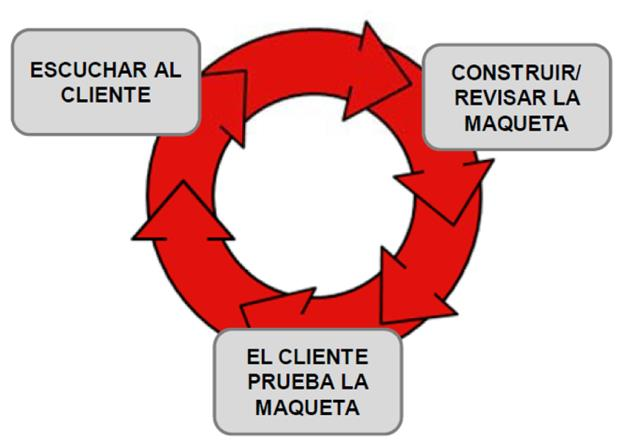

Desarrollo de aplicaciones software
El desarrollo de software es la acción que lleva a cabo un programador para crear o desarrollar software. Estos especialistas en informática conciben y elaboran sistemas informáticos, los implementan y los ponen en marcha para ser utilizados con uno o varios lenguajes de programación. Sus principales características son: la programación orientada a objetos y la separación de las distintas etapas lógicas en función de la aplicación, el acceso y el nivel de presentación.
El desarrollo de software está impulsando la creación de aplicaciones corporativas, tanto a nivel interno como externo, y es un proceso complejo que requiere mucha planificación. Sin embargo, la creación de aplicaciones no implica simplemente su desarrollo, sino también otras tareas indispensables para su funcionamiento, como: el análisis de los sistemas, el diseño del software, la prueba y la revisión, el mantenimiento, la usabilidad, la reingeniería, la arquitectura, entre muchas otras cosas.
Los principales usos del desarrollo de software en la actualidad están llevándose a cabo por parte de las empresas, quienes están creando sus propias aplicaciones tanto móviles como web para mejorar el proceso interno, la atención al cliente, la visibilidad de la marca y la experiencia de usuario. Las aplicaciones móviles son una vía perfecta para dar a conocer tus productos y servicios y llegar de manera más rápida, cómoda y sencilla a los consumidores.
Fases de desarrollo del software
El ciclo de vida del desarrollo de software (en inglés: SDLC – Systems Development Life Cycle) es la estructura que contiene los procesos, actividades y tareas relacionadas con el desarrollo y mantenimiento de un producto de software, abarcando la vida completa del sistema, desde la definición de los requisitos hasta la finalización de su uso.
Se trata de evitar los costes de rectificar errores de implementación mediante un método que permita a los programadores adelantarse para mejorar sus resultados finales.
Este sistema de desarrollo (o ciclo de vida del proceso de software) necesita de varios pasos imprescindibles para garantizar que los programas ofrezcan una buena experiencia al usuario, seguridad, eficiencia, estabilidad y fiabilidad de uso.
Fases del SDLC
El SDLC consta de fases basadas en tiempo y divididas en contenido. Cada fase se apoya en los entregables generados en la fase anterior. Por ejemplo, el diseño parte de las funcionalidades detectadas en la fase de requisitos. En la fase de construcción, los desarrolladores utilizan los diseños generados para desarrollar el software. El proceso SDLC consta esencialmente de las siguientes fases:
- Fase de análisis
- Fase de diseño
- Fase de desarrollo
- Fase de pruebas
- Fase de instalación/despliegue
- Uso y mantenimiento
Fase previa: Planificación
Antes de que se le dé oficialmente el pistoletazo de salida a un proyecto de desarrollo de un sistema de información, es necesario realizar una serie de tareas previas que influirán decisivamente en la finalización con éxito del proyecto. Estas tareas se conocen popularmente como el fuzzy front-end del proyecto al no estar sujetas a plazos. Las tareas iniciales que se realizarán en esta fase inicial del proyecto incluyen actividades tales como la determinación del ámbito del proyecto, la realización de un estudio de viabilidad, el análisis de los riesgos asociados al proyecto, una estimación del coste del proyecto, su planificación temporal y la asignación de recursos a las distintas etapas del proyecto.
Delimitación del ámbito del proyecto
Resulta esencial determinar el ámbito del proyecto al comienzo del mismo. Han de establecerse de antemano qué cuestiones han de resolverse durante la realización del proyecto y cuáles se dejarán fuera. Tan importante es determinar los aspectos abarcados por el proyecto como fijar aquellos aspectos que no se incluirán en el proyecto. Estos últimos han de indicarse explícitamente. Si es necesario, se puede especificar todo aquello que se posponga hasta una versión posterior del sistema. Si, en algún momento, fuese necesario incluir en el proyecto algún aspecto que no había sido considerado o que ya había sido descartado, es obligatorio reajustar la estimación del coste del proyecto y su planificación temporal.
Como resultado de la delimitación del ámbito del proyecto se obtiene un documento breve, de 1 o 2 páginas, en el que se describe el problema que nuestro sistema de información pretende resolver. Este documento, denominado a veces mission statement o project charter, debe existir siempre en todo proyecto. En él se recogerá la descripción de más alto nivel de la funcionalidad que tendrá nuestro sistema de información, sus características principales y sus objetivos clave. Obviamente, este documento debe formar parte del contrato que se firme con el cliente en el arranque oficial del proyecto.
Además de ser breve, una buena descripción del proyecto debe superar con éxito la prueba del ascensor. Debe estar escrito en un lenguaje que cualquiera pueda entender, evitando un vocabulario excesivamente técnico. Además, debe recoger todo lo que le contaríamos a un conocido en unos segundos acerca del proyecto en el que estamos trabajando si nos lo cruzáramos por la calle o nos lo encontrásemos en un ascensor.
Estudio de viabilidad
Con recursos ilimitados (tiempo y dinero), casi cualquier proyecto se podría llevar a buen puerto. Por desgracia, en la vida real los recursos son más bien escasos, por lo que no todos los proyectos son viables. En un conocido informe de 1994 (el informe Chaos del Standish Group), se hizo un estudio para determinar el alcance de la conocida como "crisis crónica de la programación" y, en la medida de lo posible, identificar los principales factores que hacen fracasar proyectos de desarrollo de software y los ingredientes clave que pueden ayudar a reducir el índice de fracasos. De entre los proyectos analizados:
- Sólo uno de cada seis se completó a tiempo, de acuerdo con su presupuesto y con todas las características inicialmente especificadas.
- La mitad de los proyectos llegó a completarse eventualmente, costando más de lo previsto, tardando más tiempo del estimado inicialmente y con menos características de las especificadas al comienzo del proyecto.
- Por último, más de un 30% de los proyectos se canceló antes de completarse.
Dado que cinco de cada seis proyectos analizados no se ajustaron al plan previsto, no es de extrañar que resulte aconsejable realizar un estudio de viabilidad antes de comenzar el desarrollo de un sistema de información para determinar si el proyecto es económica, técnica y legalmente viable. De hecho, lo primero que deberíamos hacer es plantearnos si la mejor opción es desarrollar un sistema informatizado o es preferible un sistema manual. Algo así debieron hacer los rusos cuando decidieron llevar lápices al espacio (según dicen, los americanos gastaron una fortuna hasta que inventaron un bolígrafo que funcionaba en ausencia de gravedad).
Antes de comenzar un proyecto, se debería evaluar la viabilidad económica, técnica y legal del mismo. Y no sólo eso: el resultado del estudio de viabilidad debería ajustarse a la realidad. A Jerry Weinberg, un conocido consultor, se le ocurrió preguntar a los asistentes a una conferencia suya, en el Congreso Internacional de Ingeniería del Software de 1987, cuántos de ellos habían participado en un estudio de viabilidad en el que se hubiese determinado que el proyecto no era técnicamente viable. De los mil quinientos asistentes, nadie levantó la mano.
Análisis de riesgos
Independientemente de la precisión con la que hayamos preparado nuestro proyecto, siempre se produce algún contratiempo que eche por tierra la mejor de las planificaciones. Es algo inevitable con lo que hemos de vivir y para lo cual disponemos de una herramienta extremadamente útil: la gestión de riesgos, que tradicionalmente se descompone en evaluación de riesgos y control de riesgos.
La evaluación de riesgos se utiliza para identificar "riesgos" que pueden afectar negativamente al plan de nuestro proyecto, estimar la probabilidad de que el riesgo se materialice y analizar su posible impacto en nuestro proyecto. ¿Qué sucedería si algún miembro clave de nuestro equipo abandona la empresa, se va de vacaciones, se pone enfermo o pide una baja por depresión causada por un entorno de trabajo hostil? ¿Y si al final nos encontramos con algún problema de compatibilidad del sistema que hemos desarrollado con la configuración de los equipos sobre los que ha de funcionar? ¿Si, inadvertidamente, borramos o modificamos erróneamente algún que otro fichero clave? ¿Si nuestro ordenador se avería?
Una vez analizados los riesgos potencialmente más peligrosos, podemos recurrir a distintas técnicas de control de riesgos. Por ejemplo, podemos elaborar planes de contingencia para los riesgos que sean más probables y de consecuencias más desastrosas para el proyecto. O tal vez seamos capaces de eliminar el riesgo de raíz (o mitigarlo) si buscamos alguna alternativa en la que el riesgo identificado no pueda presentarse (o se presente debilitado).
Independientemente de la solución por la que optemos, el análisis de riesgos nos enseña que hemos de dejar un margen para imprevistos previsibles y añadir cierta holgura a la planificación de nuestro proyecto. Las hipótesis barajadas al analizar riesgos potenciales pueden convertirse en realidad y nunca está de más dejar algo de margen de maniobra.
Estimación
Sin duda, una de las tareas más peliagudas de cualquier proyecto de desarrollo de software es la estimación inicial del coste de algo que aún no conocemos. De hecho, la realización de malas estimaciones ha sido identificada como una de las dos causas más comunes del fracaso de un proyecto de desarrollo de software (Glass, 2003). La otra es la existencia de requerimientos inestables sujetos a continuos cambios.
Como dijo Böhr, la predicción es difícil, especialmente si se trata del futuro. Además, la estimación del coste asociado se suele realizar en el peor momento posible: al comienzo, cuando menos conocemos del proyecto y mayor es el margen de error de la estimación.
Afortunadamente, existen algunas reglas heurísticas que nos pueden ayudar a estimar con una precisión razonable el coste y duración de un proyecto. El arte de una buena estimación está basado, fundamentalmente, en la experiencia del estimador. Haber participado en proyectos de similares características puede ser esencial para que seamos capaces de realizar una buena estimación. También podemos obtener resultados aceptables si tenemos en cuenta lo siguiente:
- Nunca se ha de realizar una estimación sobre la marcha, por mucho que nos presionen. Una respuesta apresurada sólo sirve para pillarnos los dedos y que después no podamos cumplir con las expectativas que nosotros mismos hemos creado. Una estimación siempre ha de ser meditada, tras un estudio pormenorizado de los distintos factores que pueden afectar a la realización de nuestro proyecto.
- La incertidumbre en la estimación es inevitable, pero en ocasiones puede reducirse. Cuantos más datos históricos recopilemos y más precisa sea la información de la que dispongamos acerca de nuestro proyecto, mejor será nuestra estimación.
- Hemos de descomponer nuestro proyecto en tareas de la granularidad adecuada. El error que se comete al estimar el conjunto de las actividades del proyecto es mayor que el que se comete cuando estimamos cada una de las actividades por separado. Los errores que cometamos en las distintas estimaciones tenderán a compensarse (la ley de los grandes números en acción).
- Es muy frecuente subestimar el esfuerzo necesario cuando descomponemos un problema complejo en multitud de tareas. Esto se debe a que, durante el transcurso del proyecto, también han de realizarse otras muchas tareas que probablemente hayamos olvidado incluir en nuestra estimación. Además, consideradas de forma independiente, las distintas tareas del proyecto resultan aparentemente más fáciles de realizar de lo que en realidad son.
- Resulta aconsejable utilizar varias técnicas de estimación y contrastar los resultados con ellas obtenidos. Por ejemplo, podemos realizar una estimación en función del coste de un proyecto similar, utilizar algún modelo matemático de estimación (COCOMO o similar) y realizar una tercera estimación descomponiendo nuestro proyecto en tareas. Si los resultados obtenidos con las distintas técnicas de estimación son similares, probablemente nuestra estimación sea buena.
Planificación temporal y asignación de recursos
Una vez que hemos decidido seguir adelante con nuestro proyecto, hemos de planificar su temporización. Una planificación excesivamente detallada (con el proyecto descompuesto en tareas de un día, por ejemplo) puede resultar contraproducente. Cualquier error de planificación causado por algún imprevisto nos forzará a replanificar el resto del proyecto, retrasándolo aún más. Una planificación por semanas suele ser razonable para afrontar con comodidad las contingencias con las que nos vayamos encontrando sin tener que estar continuamente reajustando el plan del proyecto.
Pase lo que pase, la planificación del proyecto ha de reajustarse cada vez que cambien las circunstancias del mismo. Si no se ha podido terminar una tarea en el tiempo inicialmente establecido, no nos vale suponer alegremente que posteriormente se recuperará el tiempo perdido. Los proyectos se retrasan poco a poco. Debemos aprovechar las primeras señales de alarma y no esconderlas debajo de la alfombra fingiendo que todo marcha según lo previsto.
Tampoco vale decir que algo está casi terminado. O lo está o no lo está. Si no lo está, el plan ha de ajustarse a la situación real del proyecto. Pensar que algo está casi acabado sólo sirve para darnos una falsa sensación de seguridad. Además, el 10% final de algo tiende a requerir el 90% del tiempo, así que no nos sirve de nada saber que hemos realizado el 80% del esfuerzo si no podemos asegurar a qué parte corresponde el 20% que nos queda (¿a la que se termina rápidamente o a la que consume la mayor parte de nuestro tiempo?). Como dice un viejo adagio: "la primera mitad se lleva el 90% del tiempo; la segunda, el 90% restante". No use nunca en su planificación el hecho de que determinadas actividades del proyecto están casi terminadas.
La planificación es fundamental en la gestión de un proyecto de desarrollo de software. Procure siempre mantener su plan al día. Un plan que no se ajusta a la realidad no sirve de mucho. Cuando algún retraso indique que posiblemente le será imposible cumplir los plazos establecidos, hable con su cliente. A él le interesa saberlo y, aunque probablemente no se lo agradezca, a la larga resultará beneficioso y usted habrá cumplido con su obligación profesional.
Algunos errores comunes
Cuando las cosas no marchen del todo bien, hemos de evitar tomar algunas medidas que lo único que conseguirán es perjudicarnos. Aquí van algunas de las más comunes:
- Abreviar las etapas iniciales del proceso de desarrollo de software (planificación y análisis, generalmente) para pasar directamente a la "construcción" del sistema. Los errores cometidos en las fases iniciales de un proyecto son mucho más costosos de corregir a la larga, por lo que abreviar las etapas iniciales tiene graves consecuencias.
- No gestionar adecuadamente los cambios que inevitablemente ocurren durante el proyecto. Tan malo es permitir cualquier cambio de forma indiscriminada como ser excesivamente rígidos a la hora de no admitir cambios aunque éstos sean razonables.
- Reducir la interacción con el cliente, ya que aparentemente sólo se dedica a entorpecer nuestro trabajo con sus continuos cambios de opinión y sus expectativas poco realistas. Craso error. Al fin y al cabo, el cliente es la persona cuyas necesidades hemos de descubrir y satisfacer.
- Olvidar que añadir personal a un proyecto retrasado, por lo general, sólo lo retrasa más (la ley de Brooks). La curva de aprendizaje que se necesita para comenzar a ser productivo ha de tenerse siempre en cuenta. Además, ¿quién le resuelve las dudas al recién incorporado? El tiempo que empleen los demás miembros del equipo será tiempo que no podrán utilizar en otras cosas.
- Someter a los miembros de nuestro equipo a continuas interrupciones durante su jornada de trabajo (llamadas telefónicas, reuniones, consultas...). La calidad del trabajo intelectual depende de la capacidad del trabajador de mantener su "estado de flujo" (un estado relajado de inmersión total en un problema que facilita su comprensión y la generación de soluciones). Se tarda unos 15 minutos en conseguir este estado, por lo que una simple interrupción cada 10 minutos afecta drásticamente al rendimiento del trabajador.
- Hacer trabajar horas extra a los miembros del equipo de desarrollo sólo sirve para disminuir su productividad (trabajo realizado por unidad de tiempo). Tras una larga jornada de trabajo, la mente pierde su frescura y comete errores que luego tendrán que corregirse. ¿Adivina cómo? Con más horas extra.
- No informar de pequeños retrasos pensando que más tarde se recuperará el tiempo perdido. La planificación temporal del proyecto debe ir ajustándose conforme vamos aprendiendo más cosas acerca del problema al que nos enfrentamos. En el peor de los casos, se deben negociar algunos recortes con el cliente si éste desea mantener los plazos estipulados al comienzo del proyecto.
- Confiar excesivamente en la mejora de rendimiento que se producirá gracias al uso de una nueva herramienta, tecnología o metodología (error conocido como el "síndrome de la bala de plata" en honor a un artículo muy recomendable escrito por Fred Brooks: No silver bullets - Essence and accidents of Software Engineering, Computer, 1987).
Fase de Análisis
Lo primero que debemos hacer para construir un sistema de información es averiguar qué es exactamente lo que tiene que hacer el sistema. La etapa de análisis en el ciclo de vida del software corresponde al proceso mediante el cual se intenta descubrir qué es lo que realmente se necesita y se llega a una comprensión adecuada de los requerimientos del sistema (las características que el sistema debe poseer).
¿Por qué resulta esencial la etapa de análisis? Simplemente, porque si no sabemos con precisión qué es lo que se necesita, ningún proceso de desarrollo nos permitirá obtenerlo. El problema es que, de primeras, puede que ni nuestro cliente sepa qué es exactamente lo que necesita. Por tanto, deberemos ayudarle a averiguarlo con ayuda de distintas técnicas (algunas de las cuales aprenderemos a utilizar más adelante).
¿Por qué es tan importante averiguar exactamente cuáles son los requerimientos del sistema si el software es fácilmente maleable (aparentemente)? Porque el coste de construir correctamente un sistema de información a la primera es mucho menor que el coste de construir un sistema que habrá que modificar más adelante. Cuanto antes se detecte un error, mejor. Distintos estudios han demostrado que eliminar un error en las fases iniciales de un proyecto (en la etapa de análisis) resulta de 10 a 100 veces más económico que subsanarlo al final del proyecto. Conforme avanza el proyecto, el software se va describiendo con un mayor nivel de detalle, se concreta cada vez más y se convierte en algo cada vez más rígido.
¿Es posible determinar de antemano todos los requerimientos de un sistema de información? Desgraciadamente, no. De hecho, una de las dos causas más comunes de fracaso en proyectos de desarrollo de software es la inestabilidad de los requerimientos del sistema (la otra es una mala estimación del esfuerzo requerido por el proyecto). En el caso de una mala estimación, el problema se puede solucionar estableciendo objetivos más realistas. Sin embargo, en las etapas iniciales de un proyecto, no disponemos de la información necesaria para determinar exactamente el problema que pretendemos resolver, por mucho tiempo que le dediquemos al análisis del problema (un fenómeno conocido como la parálisis del análisis).
La inestabilidad de los requerimientos de un sistema es inevitable. Se estima que un 25% de los requerimientos iniciales de un sistema cambian antes de que el sistema comience a utilizarse. Muchas prácticas resultan efectivas para gestionar adecuadamente los requerimientos de un sistema y, en cierto modo, controlar su evolución. Un buen analista debería tener una formación adecuada en:
- Técnicas de elicitación de requerimientos.
- Herramientas de modelado de sistemas.
- Metodologías de análisis de requerimientos.
Técnicas de elicitación de requerimientos
En la fase de análisis, los errores más difíciles de corregir son los causados por "requerimientos ausentes", generalmente en la forma de suposiciones que se dan por sabidas pero nunca se llegan a plasmar explícitamente. Por este motivo, elicitar los requerimientos de un sistema de información (esto es, obtener de algún modo cuáles son realmente esos requerimientos) resulta una actividad esencial en cualquier proceso de desarrollo de software.
La elicitación de requerimientos requiere previamente la identificación de las personas afectadas por el proyecto, sus stakeholders (literalmente, los que apuestan algo), lo que incluye desde el cliente que paga el proyecto hasta los usuarios finales de la aplicación, sin olvidarse de terceras personas y organizaciones relacionadas indirectamente con el sistema que se va a desarrollar (por ejemplo, empresas competidoras y organismos reguladores). En la elicitación de requerimientos se recurre a distintas técnicas que favorezcan la comunicación entre el analista y el resto de personas involucradas, como puede ser la realización de entrevistas (en las que importa no sólo lo que se pregunta, sino cómo se pregunta), el diseño de cuestionarios (cuando no tenemos tiempo ni recursos para entrevistar personalmente a todo el mundo) o el desarrollo de prototipos (para recoger información que, de otra forma, no obtendríamos hasta las etapas finales del proyecto, cuando cualquier rectificación saldría mucho más cara). También se puede observar el funcionamiento normal del entorno en el que se instalará nuestro sistema o, incluso, participar activamente en él (por ejemplo, desempeñando temporalmente el trabajo de los usuarios de nuestro sistema). Por último, también podemos investigar por nuestra cuenta consultando documentos relacionados con el tema de nuestro proyecto o estudiando productos similares que ya existan en el mercado.
Herramientas de modelado de sistemas
Un modelo, básicamente, no es más que una simplificación de la realidad. El uso de modelos en la construcción de sistemas de información resulta esencial por los siguientes motivos:
- Los modelos ayudan a comunicar la estructura de un sistema complejo (y, por tanto, a comunicarnos con las demás personas involucradas en un proyecto).
- Los modelos sirven para especificar el comportamiento deseado del sistema (como guía para las etapas posteriores del proyecto).
- Los modelos nos ayudan a comprender mejor lo que estamos diseñando (por ejemplo, para detectar inconsistencias y corregirlas).
- Los modelos nos permiten descubrir oportunidades de simplificación (ahorrarnos trabajo en el proyecto actual) y de reutilización (ahorrarnos trabajo en futuros proyectos).
En resumidas cuentas, los modelos, entre otras cosas, facilitan el análisis de los requerimientos del sistema, así como su posterior diseño e implementación. Un modelo, en definitiva, proporciona "los planos" de un sistema.
El modelo ha de capturar "lo esencial" desde determinado punto de vista. En función de para qué queramos el modelo, lo haremos más o menos detallado, siempre de acuerdo a su relevancia y utilidad.
Un sistema de información es un sistema complejo, por lo que a (casi) nadie se le ocurriría intentar describirlo utilizando un único modelo. De hecho, todo sistema puede describirse desde distintos puntos de vista y nosotros utilizaremos distintos tipos de modelos dependiendo del aspecto del sistema en que deseemos centrar nuestra atención:
- Existen modelos estructurales que nos ayudan a la hora de organizar un sistema complejo. Por ejemplo, un diagrama entidad/relación nos indica cómo se estructuran los datos de un sistema de información, mientras que un diagrama de flujo de datos nos da información acerca de cómo se descompone un sistema en subsistemas y del flujo de datos que existe entre los distintos subsistemas.
- También existen modelos de comportamiento que nos permiten analizar y modelar la dinámica de un sistema. Por ejemplo, un diagrama de estados representa los distintos estados en que puede encontrarse un sistema y cómo se puede pasar de un estado a otro, mientras que la descripción de un caso de uso nos ayuda a comprender la secuencia de pasos involucrada en la consecución de un objetivo concreto por parte de un usuario del sistema.
Más adelante aprenderemos las notaciones asociadas a distintos tipos de modelos cuya utilización resulta recomendable en el diseño de un sistema de información. Aprenderemos su significado, veremos su utilidad y ofreceremos algunos consejos heurísticos acerca de su correcto uso.
Metodologías de análisis de requerimientos
Las técnicas de elicitación de requerimientos y las herramientas de modelado de sistemas de las que hemos hablado en los párrafos anteriores deben utilizarse acompañadas de una metodología adecuada. En este contexto, una metodología no es más que un conjunto de convenciones que han resultado útiles en la práctica y cuyo uso combinado se recomienda.
Las metodologías de análisis particulares, de las que hay muchas, usualmente están ligadas, o bien al uso de determinadas herramientas (por lo que el vendedor de la herramienta se convierte, muchas veces, en el único promotor de la metodología), o bien a empresas de consultoría concretas (que ofrecen cursos de aprendizaje de la metodología que proponen).
En general, no obstante, la elección adecuada de las técnicas utilizadas dependerá de la situación concreta en la que se encuentre nuestro proyecto. Por este motivo, lo más adecuado es aprender cuantas más técnicas mejor y averiguar en qué situaciones resulta más efectiva cada una de ellas.
Diseño
Mientras que los modelos utilizados en la etapa de análisis representan los requisitos del usuario desde distintos puntos de vista (el qué), los modelos que se utilizan en la fase de diseño representan las características del sistema que nos permitirán implementarlo de forma efectiva (el cómo).
Un software bien diseñado debe exhibir determinadas características. Su diseño debería ser modular en vez de monolítico. Sus módulos deberían ser cohesivos (encargarse de una tarea concreta y sólo de una) y estar débilmente acoplados entre sí (para facilitar el mantenimiento del sistema). Cada módulo debería ofrecer a los demás unos interfaces bien definidos (al estilo del diseño por contrato propuesto por Bertrand Meyer) y ocultar sus detalles de implementación (siguiendo el principio de ocultación de información de Parnas). Por último, debe ser posible relacionar las decisiones de diseño tomadas con los requerimientos del sistema que las ocasionaron (algo que se suele denominar "trazabilidad de los requerimientos").
En la fase de diseño se han de estudiar posibles alternativas de implementación para el sistema de información que hemos de construir y se ha de decidir la estructura general que tendrá el sistema (su diseño arquitectónico).
El diseño de un sistema es complejo y el proceso de diseño ha de realizarse de forma iterativa. La solución inicial que propongamos probablemente no resulte la más adecuada para nuestro sistema de información, por lo que deberemos refinarla. Afortunadamente, tampoco es necesario que empecemos desde cero. Existen auténticos catálogos de patrones de diseño que nos pueden servir para aprender de los errores que otros han cometido sin que nosotros tengamos que repetirlos.
Igual que en la etapa de análisis creábamos distintos modelos en función del aspecto del sistema en que centrábamos nuestra atención, el diseño de un sistema de información también presenta distintas facetas:
- Por un lado, es necesario abordar el diseño de la base de datos, un tema que trataremos detalladamente más adelante.
- Por otro lado, también hay que diseñar las aplicaciones que permitirán al usuario utilizar el sistema de información. Tendremos que diseñar la interfaz de usuario del sistema y los distintos componentes en que se descomponen las aplicaciones. De esto último hablaremos en las dos secciones siguientes.
Arquitecturas multicapa
La división de un sistema en distintas capas o niveles de abstracción es una de las técnicas más comunes empleadas para construir sistemas complejos. Esta división se puede apreciar en el hardware, donde el diseño de un sistema en un lenguaje de alto nivel como VHDL o Verilog se traduce en un diseño a nivel de registros lógicos (RTL); éste se implementa mediante puertas lógicas, a partir de las cuales se obtiene un diseño a nivel de transistores; los transistores, finalmente, se crean en un circuito integrado con una serie de máscaras. Los protocolos de red también se diseñan utilizando distintas capas: la capa de aplicación (HTTP) utiliza los servicios de la capa de transporte (TCP), la cual se implementa sobre la capa de red (IP) y así sucesivamente hasta llegar a la transmisión física de los datos a través de algún medio de transmisión.
En realidad, el uso de capas es una forma más de la técnica de resolución de problemas conocida con el nombre de "divide y vencerás", que se basa en descomponer un problema complejo en una serie de problemas más sencillos de forma que se pueda obtener la solución al problema complejo a partir de las soluciones a los problemas más sencillos. Al dividir un sistema en capas, cada capa puede tratarse de forma independiente (sin tener que conocer los detalles de las demás).
Desde el punto de vista de la Ingeniería del Software, la división de un sistema en capas facilita el diseño modular (cada capa encapsula un aspecto concreto del sistema) y permite la construcción de sistemas débilmente acoplados (si minimizamos las dependencias entre capas, resultará más fácil sustituir la implementación de una capa sin afectar al resto del sistema). Además, el uso de capas también fomenta la reutilización (p. ej. TCP/IP se utiliza en una amplia variedad de aplicaciones, desde HTTP y FTP hasta telnet y SSH).
Como es lógico, la parte más difícil en la construcción de un sistema multicapa es decidir cuántas capas utilizar y qué responsabilidades asignarle a cada capa.
En las arquitecturas cliente/servidor se suelen utilizar dos capas. En el caso de las aplicaciones informáticas de gestión, esto se suele traducir en un servidor de bases de datos en el que se almacenan los datos y una aplicación cliente que contiene la interfaz de usuario y la lógica de la aplicación.
El problema con esta descomposición es que la lógica de la aplicación suele acabar mezclada con los detalles de la interfaz de usuario, dificultando las tareas de mantenimiento a que todo software se ve sometido y destruyendo casi por completo la portabilidad del sistema, que queda ligado de por vida a la plataforma para la que se diseñó su interfaz en un primer momento.
Mantener la misma arquitectura y pasar la lógica de la aplicación al servidor tampoco resulta una solución demasiado acertada. Se puede implementar la lógica de la aplicación utilizando procedimientos almacenados, pero éstos suelen tener que implementarse en lenguajes estructurados no demasiado versátiles. Además, suelen ser lenguajes específicos para cada tipo de base de datos, por lo que la portabilidad del sistema se ve gravemente afectada.
La solución, por tanto, pasa por crear una nueva capa en la que se separe la lógica de la aplicación de la interfaz de usuario y del mecanismo utilizado para el almacenamiento de datos. El sistema resultante tiene tres capas:
- La capa de presentación, encargada de interactuar con el usuario de la aplicación mediante una interfaz de usuario (ya sea una interfaz web, una interfaz Windows o una interfaz en línea de comandos, aunque esto último suele ser menos habitual en la actualidad).
- La lógica de la aplicación (a la que se suele hacer referencia como business logic o domain logic), usualmente implementada utilizando un modelo orientado a objetos del dominio de la aplicación, es la responsable de realizar las tareas para las cuales se diseña el sistema.
- La capa de acceso a los datos, encargada de gestionar el almacenamiento de los datos, generalmente en un sistema gestor de bases de datos relacionales, y de la comunicación del sistema con cualquier otro sistema que realice tareas auxiliares (p. ej. middleware).
Cuando el usuario del sistema no es un usuario humano, se hace evidente la similitud entre las capas de presentación y de acceso a los datos. Teniendo esto en cuenta, el sistema puede verse como un núcleo (lógica de la aplicación) en torno al cual se crean una serie de interfaces con entidades externas. Esta vista simétrica del sistema es la base de la arquitectura hexagonal de Alistair Cockburn.
No obstante, aunque sólo fuese por las peculiaridades del diseño de interfaces de usuario, resulta útil mantener la vista asimétrica del software como un sistema formado por tres capas. Por ejemplo, la interfaz de usuario debe permitir que el usuario se pueda equivocar (y rectificar de la manera menos traumática posible) y estar especialmente diseñada para agilizar su trabajo (y nunca entorpecerlo). Además, suele ser recomendable diferenciar lo que se suministra (presentación) de lo que se consume (acceso a los servicios suministrados por otros sistemas).
A pesar del atractivo de esta arquitectura con tres capas (basta con pensar lo que facilitaría la conversión de aplicaciones Windows en aplicaciones web), esta arquitectura no se ha impuesto del todo porque las herramientas de desarrollo suelen estar diseñadas para construir aplicaciones cliente/servidor ligadas a algún productor de software. De hecho, puede resultar difícil (e incluso imposible) descomponer un sistema en tres capas con determinadas herramientas de desarrollo.
Notas acerca del diseño de las aplicaciones
Si suponemos que hemos sido capaces de separar el núcleo de la aplicación de sus distintos interfaces, aún nos queda por decidir cómo vamos a organizar la implementación de la lógica asociada a la aplicación. Como en cualquier otra tarea de diseño, tenemos que llegar a un compromiso adecuado entre distintos intereses. Por un lado, nos gustaría que el diseño resultante fuese lo más sencillo posible. Por otro lado, sería deseable que nuestro diseño estuviese bien preparado para soportar las modificaciones que hayan de realizarse en el futuro.
Por lo general, el diseño de la lógica de una aplicación se suele ajustar a uno de los tres siguientes patrones de diseño:
- Rutinas: la forma más simple de implementar cualquier sistema se basa en implementar procedimientos y funciones que acepten y validen las entradas recibidas de la capa de presentación, realicen los cálculos necesarios, utilicen los servicios de aquellos sistemas que hagan falta para completar la operación, almacenen los datos en las bases de datos y envíen una respuesta adecuada al usuario. Básicamente, cada acción que el usuario pueda realizar se traducirá en un procedimiento que realizará todo lo que sea necesario al más puro estilo del diseño estructurado tradicional. Aunque este modelo sea simple y pueda resultar adecuado a pequeña escala, la evolución de las aplicaciones diseñadas de esta forma suele acabar siendo una pesadilla para las personas encargadas de su mantenimiento.
- Módulos de datos: ante la situación descrita en el párrafo anterior, lo usual es dividir el sistema utilizando los distintos conjuntos de datos con los que trabaja la aplicación para crear módulos más o menos independientes. De esta forma, se facilita la eliminación de lógica duplicada. De hecho, muchos de los entornos de desarrollo visual de aplicaciones permiten definir módulos de datos que encapsulen los conjuntos de datos con los que se trabaja y la lógica asociada a ellos. Las herramientas de Borland, Delphi y C++Builder, son un claro ejemplo, igual que el Developer de Oracle. Microsoft, en su arquitectura DNA (Distributed interNet Application), fomenta este estilo al emplear conjuntos de datos (resultado de ejecutar consultas SQL) sobre los cuales operan directamente las distintas capas de una aplicación multicapa. En el caso de la plataforma .NET, la clase DataSet proporciona la base sobre la que se montaría todo el diseño de una aplicación (algo que obviamente facilita el Visual Studio .NET).
- Modelo del dominio: una tercera opción, la ideal para cualquier purista de la orientación a objetos, es crear un modelo orientado a objetos del dominio de la aplicación. En vez de que una rutina se encargue de todo lo que haya que hacer para completar una acción, cada objeto es responsable de realizar las tareas que le atañen directamente.
En la práctica, no todo es blanco o negro. Aunque empleemos un modelo orientado a objetos del dominio de la aplicación, es habitual crear una capa intermedia entre la capa de presentación y la lógica de la aplicación a la que se suele denominar capa de servicio. La interfaz de la capa de servicio incluirá métodos asociados a las distintas acciones que pueda realizar el usuario, si bien, en vez de incluir en ella la lógica de la aplicación, la capa de servicio delega inmediatamente en los objetos responsables de cada tarea. En cierto modo, la capa de servicio se encarga de la lógica específica de la aplicación, dejando para el modelo del dominio la lógica del dominio (común a cualquier aplicación que se construya sobre el mismo dominio de aplicación).
Cualquier aplicación sufre modificaciones de mayor o menor importancia a lo largo de su vida útil. Dichas modificaciones alteran el diseño inicial de la aplicación y tienden a aumentar su entropía. Si utilizamos rutinas para implementar la lógica de nuestra aplicación en el sentido tradicional, las modificaciones pueden suponer tener que revisar el código completo de la aplicación para descubrir lo que hay que actualizar. Es como si tuviésemos una habitación completamente desordenada en la que hay que encontrar algo en particular. En el caso de los módulos de datos, el impacto de las modificaciones suele ser más fácil de determinar pero, aun así, podemos encontrarnos con sorpresas desagradables si todos los módulos de nuestra aplicación trabajan sobre un conjunto de datos cuya estructura debemos alterar ligeramente. Por último, si diseñamos un buen modelo orientado a objetos, la encapsulación proporcionada por los objetos de nuestra aplicación permitirá que el impacto de las modificaciones sea de carácter local en la mayoría de las ocasiones. En cierto modo, estamos limitando el aumento de la entropía al interior de los cajones (algo que la mayoría de nosotros tolera sin demasiados problemas).
Desarrollo
Una vez que sabemos qué funciones debe desempeñar nuestro sistema de información (análisis) y hemos decidido cómo vamos a organizar sus distintos componentes (diseño), es el momento de pasar a la etapa de desarrollo, pero nunca antes. Antes de escribir una sola línea de código (o de crear una tabla en nuestra base de datos) es fundamental haber comprendido bien el problema que se pretende resolver y haber aplicado principios básicos de diseño que nos permitan construir un sistema de información de calidad.
Para la fase de implementación hemos de seleccionar las herramientas adecuadas, un entorno de desarrollo que facilite nuestro trabajo y un lenguaje de programación apropiado para el tipo de sistema que vayamos a construir. La elección de estas herramientas dependerá en gran parte de las decisiones de diseño que hayamos tomado hasta el momento y del entorno en el que nuestro sistema deberá funcionar.
A la hora de programar, deberemos procurar que nuestro código no resulte indescifrable. Para que nuestro código sea legible, hemos de evitar estructuras de control no estructuradas, elegir cuidadosamente los identificadores de nuestras variables, seleccionar algoritmos y estructuras de datos adecuadas para nuestro problema, mantener la lógica de nuestra aplicación lo más sencilla posible, comentar adecuadamente el texto de nuestros programas y, por último, facilitar la interpretación visual de nuestro código mediante el uso de sangrías y líneas en blanco que separen distintos bloques de código.
Además de las tareas de programación asociadas a los distintos componentes de nuestro sistema, en la fase de implementación también hemos de encargarnos de la adquisición de todos los recursos necesarios para que el sistema funcione (por ejemplo, las licencias de uso del sistema gestor de bases de datos que vayamos a utilizar). Usualmente, también desarrollaremos algunos casos de prueba que nos permitan ir comprobando el funcionamiento de nuestro sistema conforme vamos construyéndolo.
Control de versiones
En todo proyecto de desarrollo de software resulta fundamental una adecuada gestión de la configuración del software (SCM, Software Configuration Management), más conocida vulgarmente por uno de sus aspectos, el control de versiones. De hecho, es una actividad clave en el nivel 2 del CMM (Capability Maturity Model), un modelo de madurez del proceso de desarrollo del software en el cual el nivel 1 representa la anarquía.
Independientemente de su importancia en el control del proceso de desarrollo de software (algo innegable), su valor es incalculable para evitar pérdidas irreparables (siempre y cuando se hagan copias de seguridad de la base de datos de nuestra herramienta de control de versiones) y también para volver cómodamente a una versión anterior de nuestro código si nuestras últimas modificaciones del código no resultaron del todo acertadas.
Pruebas
Errar es humano y la etapa de pruebas tiene como objetivo detectar los errores que se hayan podido cometer en las etapas anteriores del proyecto (y, eventualmente, corregirlos). Lo suyo, además, es hacerlo antes de que el usuario final del sistema los tenga que sufrir. De hecho, una prueba es un éxito cuando se detecta un error (y no al revés, como nos gustaría pensar).
La búsqueda de errores que se realiza en la etapa de pruebas puede adoptar distintas formas, en función del contexto y de la fase del proyecto en la que nos encontremos:
- Las pruebas de unidad sirven para comprobar el correcto funcionamiento de un componente concreto de nuestro sistema. En este tipo de pruebas, el "probador" debe buscar situaciones límite que expongan las limitaciones de la implementación del componente, ya sea tratando éste como una caja negra ("pruebas de caja negra") o fijándonos en su estructura interna ("pruebas de caja blanca"). Resulta recomendable que, conforme vamos añadiéndole nueva funcionalidad a nuestras aplicaciones, vayamos creando nuevos tests con los que medir nuestro progreso y también repitamos los antiguos para comprobar que lo que antes funcionaba sigue funcionando (test de regresión).
- Las pruebas de integración son las que se realizan cuando vamos juntando los componentes que conforman nuestro sistema y sirven para detectar errores en sus interfaces. En algunas empresas, como Microsoft, se hace una compilación diaria utilizando los componentes del sistema tal como estén en ese momento (daily build) y se somete al sistema a una serie de pruebas básicas (la prueba de humo, smoke test) que garanticen que el proyecto podrá seguir avanzando al día siguiente. El causante de que la compilación diaria falle suele tener que quedarse a hacer horas extra para que sus compañeros puedan seguir trabajando al día siguiente...
- Una vez "finalizado" el sistema, se realizan pruebas alfa en el seno de la organización encargada del desarrollo del sistema. Estas pruebas, realizadas desde el punto de vista de un usuario final, pueden ayudar a pulir aspectos de la interfaz de usuario del sistema.
- Cuando el sistema no es un producto a medida, sino que se venderá como un producto en el mercado, también se suelen realizar pruebas beta. Estas pruebas las hacen usuarios finales del sistema ajenos al equipo de desarrollo y pueden resultar vitales para que un producto tenga éxito en el mercado.
- En sistemas a medida, se suele realizar un test de aceptación que, si se supera con éxito, marcará oficialmente el final del proceso de desarrollo y el comienzo de la etapa de mantenimiento.
- Por último, a lo largo de todo el ciclo de vida del software, se suelen hacer revisiones de todos los productos generados a lo largo del proyecto, desde el documento de especificación de requerimientos hasta el código de los distintos módulos de una aplicación. Estas revisiones, de carácter más o menos formal, ayudan a verificar la corrección del producto revisado y también a validarlo (comprobar que se ajusta a los requerimientos reales del sistema).
Aunque es imposible garantizar la ausencia de errores en el software, una adecuada combinación de distintas técnicas de prueba puede ayudar a detectar más del 90% de los errores que se encontrarán a lo largo de toda la vida del sistema. Aunque podamos ser reacios a admitirlo, lo normal es que el 40% de nuestro tiempo lo "perdamos" eliminando errores, mientras que sólo empleamos un 20% en la etapa de análisis, otro 20% en el diseño y el 20% restante en la implementación del sistema (Robert Glass, Building quality software, 1992).
Al realizar cualquiera de los tipos de prueba descritos, es importante recordar que el desarrollo de software es una actividad que se realiza en equipo, por lo que pueden surgir roces personales y disputas políticas entre los miembros del equipo. Las pruebas resultan particularmente delicadas en este sentido, ya que su objetivo es, al fin y al cabo, encontrar defectos.
Instalación / Despliegue
Una vez concluidas las etapas de desarrollo de un sistema de información (análisis, diseño, implementación y pruebas), llega el instante de poner el sistema en funcionamiento, su instalación o despliegue. De cara a su instalación, hemos de planificar el entorno en el que el sistema debe funcionar, tanto hardware como software: equipos necesarios y su configuración física, redes de interconexión entre los equipos y de acceso a sistemas externos, sistemas operativos (actualizados para evitar problemas de seguridad), bibliotecas y componentes suministrados por terceras partes, etcétera.
Para asegurar el correcto funcionamiento del sistema, resulta esencial que tengamos en cuenta las dependencias que pueden existir entre los distintos componentes del sistema y sus versiones. Una aplicación puede que sólo funcione con una versión concreta de una biblioteca auxiliar. Un disco duro puede que sólo rinda al nivel deseado si instalamos un controlador concreto. Componentes que por separado funcionarían correctamente, combinados causan problemas, por lo que deberemos utilizar sólo combinaciones conocidas que no presenten problemas de compatibilidad.
Si nuestro sistema reemplaza a un sistema anterior o se despliega paulatinamente en distintas fases, también hemos de planificar cuidadosamente la transición del sistema antiguo al nuevo de forma que sus usuarios no sufran una disrupción en el funcionamiento del sistema. En ocasiones, el sistema se instala físicamente en un entorno duplicado y la transición se hace de forma instantánea una vez que la nueva configuración funciona correctamente. Cuando el presupuesto no da para tanto, tal vez haya que buscar un momento de baja utilización del sistema para realizar la actualización (por la noche o en fin de semana, por ejemplo).
Uso y mantenimiento
La etapa de mantenimiento consume típicamente del 40 al 80 por ciento de los recursos de una empresa de desarrollo de software. De hecho, con un 60% de media, es probablemente la etapa más importante del ciclo de vida del software. Dada la naturaleza del software, que ni se rompe ni se desgasta con el uso, su mantenimiento incluye tres facetas diferentes:
- Eliminar los defectos que se detecten durante su vida útil (mantenimiento correctivo), lo primero que a uno se le viene a la cabeza cuando piensa en el mantenimiento de cualquier cosa.
- Adaptarlo a nuevas necesidades (mantenimiento adaptativo), cuando el sistema ha de funcionar sobre una nueva versión del sistema operativo o en un entorno hardware diferente, por ejemplo.
- Añadirle nueva funcionalidad (mantenimiento perfectivo), cuando se proponen características deseables que supondrían una mejora del sistema ya existente.
De las distintas facetas del mantenimiento, la eliminación de defectos sólo supone el 17% del coste de mantenimiento de un sistema, mientras que el diseño e implementación de mejoras es responsable del 60% del coste de mantenimiento. Es decir, más de un tercio del coste total del software se emplea en añadirle características a software ya existente (el 60% del 60%). La corrección de errores supone, en contraste, "sólo" en torno al 10% del coste total del software. Aún menos cuanto mejores sean las técnicas usadas en su desarrollo.
Se ha observado que, cuanto mejor sea el software, más tendremos que invertir en su mantenimiento, aun cuando se emplee menos esfuerzo en corregir defectos. Este hecho, que puede parecer paradójico, se debe, simplemente, a que nuestro sistema se usará más (a veces, de formas que no habíamos previsto). Por tanto, nos llegarán más propuestas de modificación y mejora que si el sistema hubiese quedado aparcado, cogiendo polvo, en algún rincón.
Si examinamos las tareas que se llevan a cabo durante la etapa de mantenimiento, nos encontramos que en el mantenimiento se repiten todas las etapas que ya hemos visto del ciclo de vida de un sistema de información. Al tratar principalmente de cómo añadirle nueva funcionalidad a un sistema ya existente, el mantenimiento repite "en miniatura" el ciclo de vida completo de un sistema de información. Es más, a las tareas normales de desarrollo hemos de añadirle una nueva: comprender el sistema que ya existe, por lo que se podría decir que el mantenimiento de un sistema es más difícil que su desarrollo (Glass, 2003).
Modelos de ciclos de vida
La ingeniería del software se vale de una serie de modelos que establecen y muestran las distintas etapas y estados por los que pasa un producto software, desde su concepción inicial, pasando por su desarrollo, puesta en marcha y posterior mantenimiento, hasta la retirada del producto. A estos modelos se les denomina "modelos de ciclo de vida del software". El primer modelo concebido fue el de Royce, más comúnmente conocido como "Cascada" o "Lineal Secuencial". Este modelo establece que las diversas actividades que se van realizando al desarrollar un producto software se suceden de forma lineal.
Los modelos de ciclo de vida del software describen las fases del ciclo de software y el orden en que se ejecutan las fases.
Un modelo de ciclo de vida de software es una vista de las actividades que ocurren durante el desarrollo de software; intenta determinar el orden de las etapas involucradas y los criterios de transición asociados entre estas etapas. Un modelo de ciclo de vida del software:
- Describe las fases principales de desarrollo de software.
- Define las fases primarias esperadas de ser ejecutadas durante esas fases.
- Ayuda a administrar el progreso del desarrollo.
- Provee un espacio de trabajo para la definición de un proceso detallado de desarrollo de software.
Las principales diferencias entre distintos modelos de ciclo de vida están en:
- El alcance del ciclo dependiendo de hasta dónde llegue el proyecto correspondiente. Un proyecto puede comprender un simple estudio de viabilidad del desarrollo de un producto, o su desarrollo completo o, en el extremo, toda la historia del producto con su desarrollo, fabricación y modificaciones posteriores hasta su retirada del mercado.
- Las características (contenidos) de las fases en que dividen el ciclo. Esto puede depender del propio tema al que se refiere el proyecto, o de la organización.
- La estructura y la sucesión de las etapas, si hay realimentación entre ellas, y si tenemos libertad de repetirlas (iterar).
Modelo en cascada
Es un enfoque metodológico que ordena rigurosamente las etapas del ciclo de vida del software, de forma que el inicio de cada etapa debe esperar a la finalización de la inmediatamente anterior.
El modelo en cascada es un proceso de desarrollo secuencial, en el que el desarrollo se ve fluyendo hacia abajo (como una cascada) sobre las fases que componen el ciclo de vida.
La primera descripción formal del modelo en cascada se cree que fue en un artículo publicado en 1970 por Winston W. Royce, aunque Royce no usó el término cascada en este artículo. Irónicamente, Royce estaba presentando este modelo como un ejemplo de modelo que no funcionaba, defectuoso. En el modelo original de Royce, existían las siguientes fases:

Para seguir el modelo en cascada, se avanza de una fase a la siguiente en una forma puramente secuencial.
Si bien ha sido ampliamente criticado desde el ámbito académico y la industria, sigue siendo el paradigma más seguido a día de hoy.
Modelo V
El modelo en V se desarrolló para terminar con algunos de los problemas que se vieron utilizando el enfoque de cascada tradicional. Los defectos estaban siendo encontrados demasiado tarde en el ciclo de vida, ya que las pruebas no se introducían hasta el final del proyecto. El modelo en V dice que las pruebas necesitan empezarse lo más pronto posible en el ciclo de vida. También muestra que las pruebas no son sólo una actividad basada en la ejecución. Hay una variedad de actividades que se han de realizar antes del fin de la fase de codificación. Estas actividades deberían ser llevadas a cabo en paralelo con las actividades de desarrollo, y los técnicos de pruebas necesitan trabajar con los desarrolladores y analistas de negocio de tal forma que puedan realizar estas actividades y tareas y producir una serie de entregables de pruebas.
El modelo en V es un proceso que representa la secuencia de pasos en el desarrollo del ciclo de vida de un proyecto. Describe las actividades y resultados que han de ser producidos durante el desarrollo del producto. La parte izquierda de la V representa la descomposición de los requisitos y la creación de las especificaciones del sistema. El lado derecho de la V representa la integración de partes y su verificación. V significa "Validación y Verificación".

Realmente las etapas individuales del proceso pueden ser casi las mismas que las del modelo en cascada. Sin embargo, hay una gran diferencia. En vez de ir para abajo de una forma lineal, las fases del proceso vuelven hacia arriba tras la fase de codificación, formando una V. La razón de esto es que para cada una de las fases de diseño se ha encontrado que hay un homólogo en las fases de pruebas que se correlacionan.
Modelo iterativo
Es un modelo derivado del ciclo de vida en cascada. Este modelo busca reducir el riesgo que surge entre las necesidades del usuario y el producto final por malos entendidos durante la etapa de recogida de requisitos.

Consiste en la iteración de varios ciclos de vida en cascada. Al final de cada iteración se le entrega al cliente una versión mejorada o con mayores funcionalidades del producto. El cliente es quien, después de cada iteración, evalúa el producto y lo corrige o propone mejoras. Estas iteraciones se repetirán hasta obtener un producto que satisfaga las necesidades del cliente.
Este modelo se suele utilizar en proyectos en los que los requisitos no están claros por parte del usuario, por lo que se hace necesaria la creación de distintos prototipos para presentarlos y conseguir la conformidad del cliente.
Modelo de desarrollo incremental
El modelo incremental combina elementos del modelo en cascada con la filosofía interactiva de construcción de prototipos. Se basa en la filosofía de construir incrementando las funcionalidades del programa. Este modelo aplica secuencias lineales de forma escalonada mientras progresa el tiempo en el calendario. Cada secuencia lineal produce un incremento del software.

Cuando se utiliza un modelo incremental, el primer incremento es a menudo un producto esencial, sólo con los requisitos básicos. Este modelo se centra en la entrega de un producto operativo con cada incremento. Los primeros incrementos son versiones incompletas del producto final, pero proporcionan al usuario la funcionalidad que precisa y también una plataforma para la evaluación.
Modelo en espiral
El desarrollo en espiral es un modelo de ciclo de vida desarrollado por Barry Boehm en 1985, utilizado de forma generalizada en la ingeniería del software. Las actividades de este modelo se conforman en una espiral; cada bucle representa un conjunto de actividades. Las actividades no están fijadas a priori, sino que las siguientes se eligen en función del análisis de riesgos, comenzando por el bucle anterior.
Al ser un modelo de ciclo de vida orientado a la gestión de riesgos, se dice que uno de los aspectos fundamentales de su éxito radica en que el equipo que lo aplique tenga la necesaria experiencia y habilidad para detectar y catalogar correctamente riesgos. Para cada ciclo habrá cuatro actividades:
- Determinar o fijar objetivos:
- Fijar también los productos definidos a obtener: requerimientos, especificación, manual de usuario.
- Fijar las restricciones.
- Identificar riesgos del proyecto y estrategias alternativas para evitarlos.
- Hay una cosa que sólo se hace una vez: la planificación inicial o previa.
- Análisis del riesgo: estudiar todos los riesgos potenciales y seleccionar una o varias alternativas propuestas para reducir o eliminar los riesgos.
- Desarrollar, verificar y validar (probar):
- Tareas de la actividad propia y de prueba.
- Análisis de alternativas e identificación de resolución de riesgos.
- Dependiendo del resultado de la evaluación de riesgos, se elige un modelo para el desarrollo, que puede ser cualquiera de los otros existentes, como formal, evolutivo, cascada, etc. Así, por ejemplo, si los riesgos de la interfaz de usuario son dominantes, un modelo de desarrollo apropiado podría ser la construcción de prototipos evolutivos.
- Planificar: revisar todo lo que se ha llevado a cabo, evaluándolo y decidiendo si se continúa con las fases siguientes y planificando la próxima actividad.

El proceso empieza en la posición central. Desde allí se mueve en el sentido de las agujas del reloj.
Modelo de prototipos
El paradigma de construcción de prototipos comienza con la recolección de requisitos. El desarrollador y el cliente encuentran y definen los objetivos globales para el software, identifican los requisitos conocidos y las áreas del esquema en donde es obligatoria más definición. Entonces aparece un diseño rápido. El diseño rápido se centra en una representación de esos aspectos del software que serán visibles para el usuario/cliente.
El diseño rápido lleva a la construcción de un prototipo. El prototipo lo evalúa el cliente/usuario y se utiliza para refinar los requisitos del software a desarrollar. La iteración ocurre cuando el prototipo se pone a punto para satisfacer las necesidades del cliente, permitiendo al mismo tiempo que el desarrollador comprenda mejor lo que se necesita hacer.
